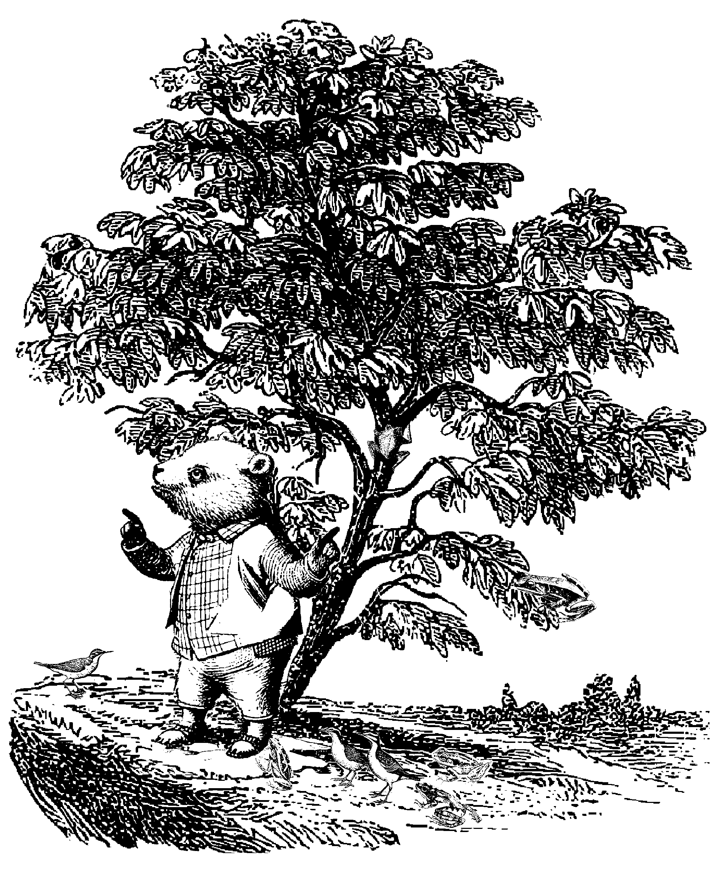
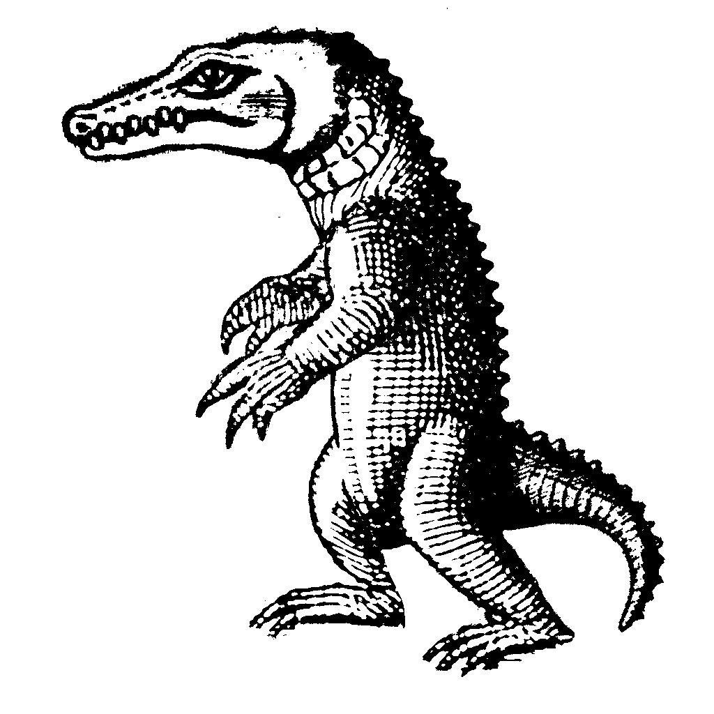

In the sixth month of the second year of Bolsonaro's reign, a dream came to Gummy, the son of Nevil, driver of Laina.
In the dream, he was declared to give the people of Pindorama a Sound.
And so he arrived, both ready and able. He spoke in rhythms, repetitions, and proverbial melodies, to declare this dream to those who wished to hear it, and to warn those who didn’t…
He met under the narrow fig, avoiding circular hills that might provoke lust, and layered mirrors that could inspire vanities.
For he was amongst them as one of them. In all, there were 243 men, 302 women, and 65 children.
Such divine harmonies caused many to propose him to be the Chosen One. Most rejected such analysis as superstition, but there was no question of his Anointing.
Full of awe, full of grace, where could such Sounds have come from? For his melodies could harbor any emotion, bring forth murmurations, and heal any misalignment.
All such sounds incited his dreams, dreams he was given in his youth. For many months he wrestled with this Dream, proposing at first its meaning as a sign to prove the earth’s youth by pilgrimaging to Lobéké to find the Yahnahpin, but no peace followed.
But Gummy was no Jonah, and so he cast lots with his Father, leading to a confirmation to declare his sound in the mountains of Pindorama.
To which his Father blessed him, for he came from such a blameless family as this.
Amongst the crowd, beyond the sounds of his dream, he rarely spoke, leaving the observers to define his countenance, as well as his frequencies.
But that did not discount the division amongst the Elders, who claimed the Youth glorified himself more than the Great One, and whose sounds evoked fleshly cries similar to that of the Beast.
The Youth countered, citing the submission of his ambition as fruits of prophetic gifting.
However, full of wisdom, and noticing the Elder’s slight fallacy on the nature of free will, Gummy was convinced their criticism was not a sign of compromise, but rather natural persecution.

He thus rejoiced, for all his sounds were obtained from that of the purest samples, and that echoed his call of the 7th Heaven.
For what prophet had not seen hardship? What noble contestant was excluded from disdain?
Thus, Gummy continued his journey, and declared deeper sounds that he might help Save the Youth.
DOXOLOGY
Chapter II
Gummy’s Holy Sacrifice
For I will go to great heights for you.
I have tied your deer upon your back.
For your servant has brought your deer for a sacrifice,
That I might be uncovered before you,
And you may bestow your blessings
Upon your Anointed One's head.
O ye faithless ones,
Remember the Great One's many wonders!
Split the antlers and make full use,
That this glory would suffice.
Coming out of his quiet place, Gummy made his way to the hills of Cachoeira, where the Mestizos had laid, to sample sounds by the neighboring rivers and rest.
The Two Capuchins
Now, rumors of blasphemy from Caesar, an Anura from the tribe of Ontário, had made their way to Cachoeira. So the Capuchins Anairiah and Balasiah, concubines of Bolsonaro, came to test Gummy while he was taking his noonday rest.
Anairiah cried, Have you heard of Caesar's blasphemy? For your sounds evoke the same fleshly cries that the Youth bow to!
Gummy answered, Suppose a farmer measured his ox by mere shadow, or a harpist incited psalms by only echoes. You speak of what you have not seen, and murmur sounds that you have not heard. Thus, you pass judgment on yourselves.
Balasiah replied, Leviathan! Your sounds are rooted in false testimony. Be wary! For you have opened a door to the Beast, and thus will bear the same wrath that is upon Caesar.
He answered, Let the Youth test my sounds by the fruit they bear, and not by the traditions of your forefathers.
They discussed his answer among themselves and said, Should they listen to him?!
Again he said, What shall I judge that I have not heard? Render unto Caesar what is Caesar's, and so let the Youth decide.
DOXOLOGY
Chapter III
Gummy’s Departure
After 84 days of declaring his Sound in Pindorama, Gummy felt he had completed his journey. I have wandered the earth, good and fro, but now I must return home to rest.
And so Gummy journeyed home to Burgum, and the Youth praised his Sounds, and it was good.
Bergum
Now there was a Great Plague at that time, and word of Gummy's new Sounds that the Youth praised as well as Caesar's blasphemy had reached Burgum.
And so, Heliniah, who was Gummy's mother, conferred with Zephisia the ram, Gummy's second father, and the high priest of the alter of Burgum.
Then Heliniah asked Zephisia, Has Gummy bowed to the praise of the Youth? Do we trust his mantle?
Zephisia replied, Let us test him and see, for great compromise I sense in his Sounds. And so they went to the bridges of Carrick, where Gummy was taking his evening rest.
Heliniah said, We have heard your new Sounds, and of the Youth's praise. Have you wandered from the Great Path? Where are thy samples’ source? For its aroma reaps salt of the Ocean.
Gummy replied, Mother, I have wandered the earth and seek only rest. Why must you hold this against me now?
Zephisia said, Can thy anointing uphold the Sounds of the Ocean and Caesar without judgment? We know the source you are sampling. For whose praise do you really seek?
Gummy answered, Is a prophet honored in his homeland? Father, I have done what you instructed.
Zephisia said, Your heart is of bronze. You were called to shepherd the Youth, but have instead harbored their offerings. Do you remember your kin Ghostboi’s transgression?! For thirty days you must not speak any Sounds and consecrate yourself. And pray that the Great One may not revoke your birthright.
So Gummy ventured into the foothills of Monongahela to lift up an offering and consecrate himself, and for 30 days he did not speak as Zephisia had instructed.
Now on the 12th night of his fast, Gummy could not sleep or dream. Knowing it was a sign of his transgression, he tore his garments and wrote:
Anfechtung
Though thy actions may seem unlikely, and confusing. I am still your child.
Though my transgressions have reached unto thy high brow. I am still your child.
Though your people have forsaken your prophet and cast me a burden to heavy for my own bearing. I am still your child.
My wings have been clipped, and my messages have been misunderstood. Renew the ways of your child that I may know thy grace in the time of need.
Do not cast your child into the Pitt.
Now at the end of his fast, Gummy went to the river of Monongahela to wash himself, and sample its Sounds. And it was there, Gummy heard the wailing of the Water Spirit.
OBLATION
Chapter IV
The Water Spirit
So Gummy hopped over the rocks on the river towards the Sound of the wailing. There he saw a Water Spirit on a caerule, with scales peeling from a wound on its left side.
At that time, Gummy's forefathers and elders had sworn to him never to speak to Water Spirits or anyone east of Monongahela, for there was great unrest between their tribes for 220 years, and the Water Spirits had given many sacrifices to the Beast.
Now the Gator, native of Weeki, was also there gathering sticks by the rocks. He had come from Waves of the Ojibwe. (Gator was a devout believer in the Great One. While Chizimiah was killing off the Great One's prophets, Gator had taken eighty anointed chipmunks and hidden them in two caves, forty in each, and had supplied them with food and water.)
He had heard of Gummy's anointing, but never sought to confront him until that day.
Gummy, do not touch it, Gator said. For its scales bare sickness. If you touch it, you will surely die.
Why is it not on the east of Monongahela? Gummy asked.
I have seen it twelve times, Gator said. It comes here at dawn to whisper its Sounds alone. For it is of monoecy, and both sides refuse to touch it.
But how can it murmur pure sounds? Gummy asked.

Gummy then noticed a sharp stone it was holding on its left hand with blood on it.
Has it done this to itself? Gummy asked.
Then on the horizon, they heard rumbles of thunder as well as Elders roaming distant hills approaching the river. Gummy knew if the Elders saw them close to the Water Spirit they would be punished.
The rain began to fall and Gummy said, The Great One has sent rain. Here, divide the Water Spirit's weight with two branches and my garments, for the rain will wash off its wound that might yield plague.
So together him and Gator divided and tied two branches and tied the Water Spirit to Gummy's torn garments. But as they walked up the valley, Gummy began to question if their actions were pure.
Where do we go? Gummy asked. For both sides will surely exile us if they find us with a Water Spirit.
Then Gator spoke, Let us bring it to Mount Minsi. For I know a man who lives there, Theophanes, a gecko from Constantinople.
Gummy replied, Are not those who dwell Minsi compromised as well? For they roam with Cardinals.
He can be trusted, Gator answered. For he molds the light.
And so Gummy and Gator journeyed to Mount Minsi that they might speak to Theophanes so that he could help them.
Mount Minsi
Now Mount Minsi was cold and few people had visited it since the battle of Annam. Theophanes the gecko, stayed there in a hollow oak, and he had lived their for 150 years and was blind in his left eye.
Together Gator and Gummy brought the Water Spirit to him on sticks to where Theophanes was staying. Theophanes touched the Water Spirit with two fingers, but no sickness fell upon him.
Does it bare any time? Gator asked.
Its wound is too large, Theophanes replied. It will die by dawn if no one heals its side.
Can you help? Gummy asked.
Let us mount her to the neighboring Grasshoppers of Antheki before dawn, Theophanes replied. For they can take her to a land where she might find healing.
Where? Gummy asked.
Paname, Theophanes said.
No! Gummy exclaimed. Is this not where the Beast dwells?
Will not the weight of her blood fall upon thy hands if not sent? For Burgum will only cast stones upon this wound, Theophanes replied.
Gummy did not reply, for he was rarely questioned at that time. And so they agreed, and Theophanes mounted the Water Spirit on the Grasshoppers of Antheki before their flight.
Then Gummy and Gator went back down to the Monongahela. And torn between great sorrow, Gummy wept.